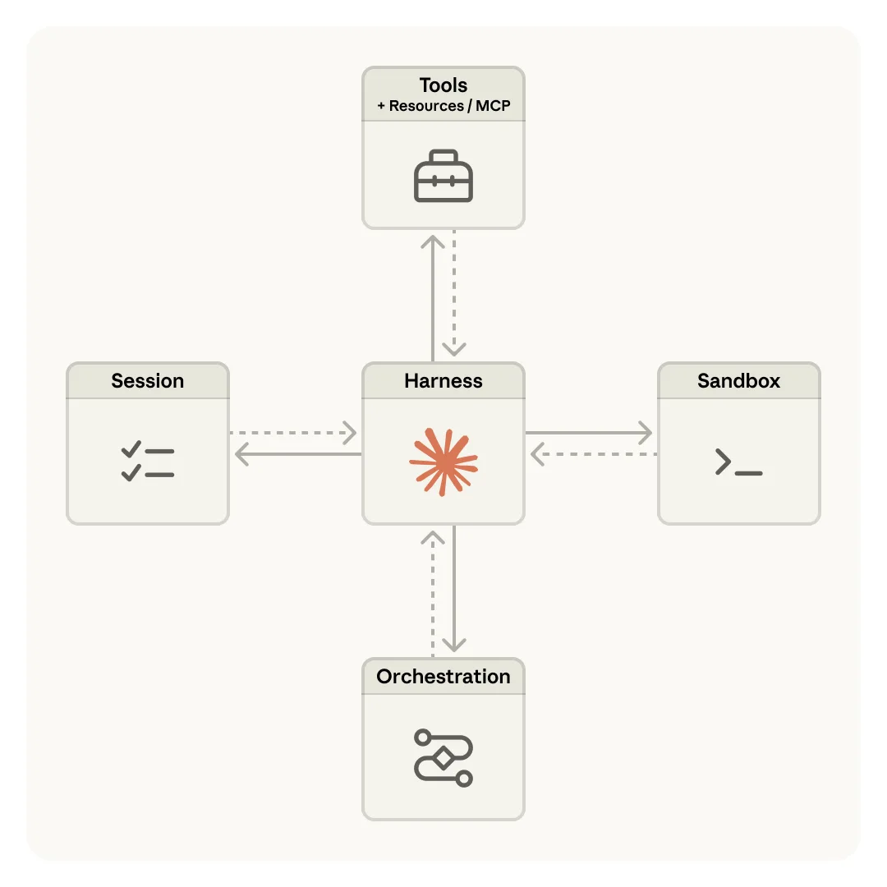
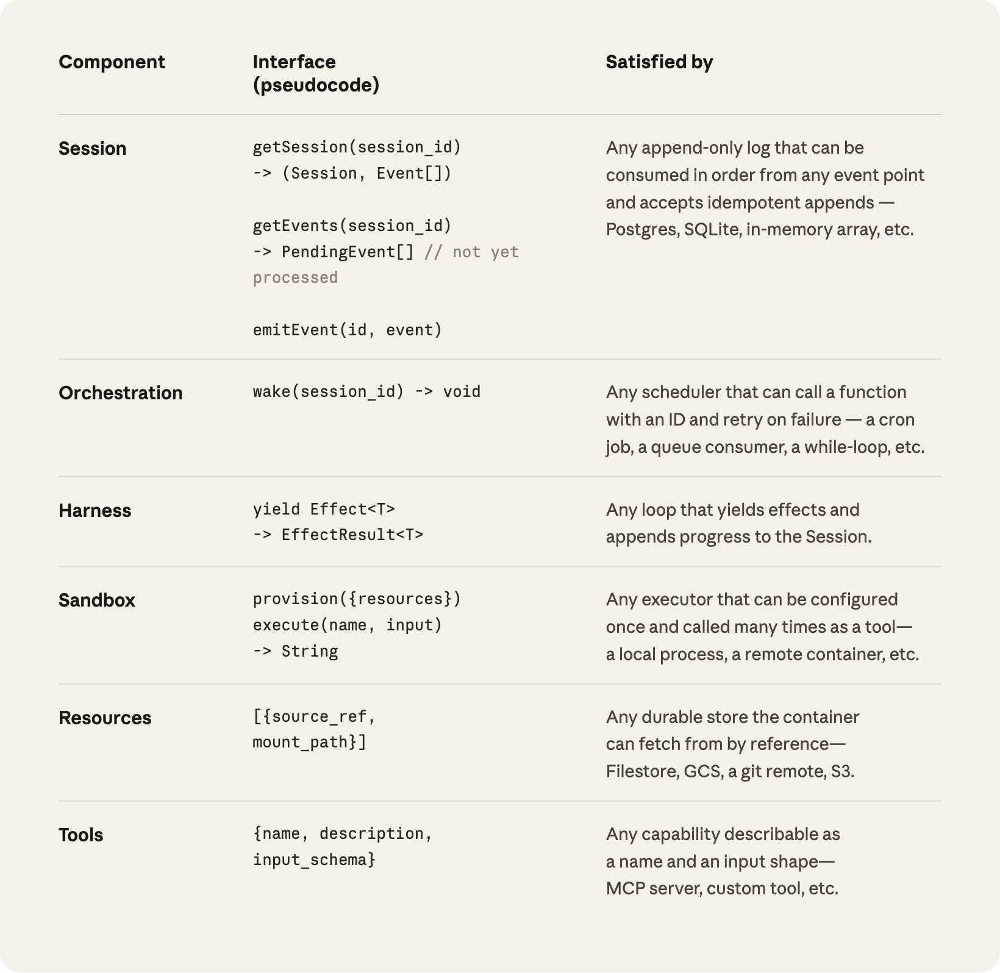
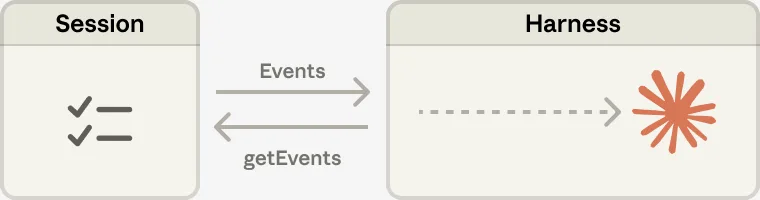
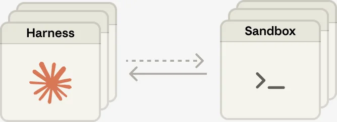

Anthropic Research · 2026-04-08
Scaling Managed Agents: Decoupling the brain from the hands扩展托管智能体：把「大脑」和「双手」拆开
60 秒速览：这篇文章在说什么
译者所加，不是原文的一部分 —— 读完这 6 条，再看原文会快很多。
- 一句话结论：托管智能体（Managed Agents）把智能体拆成会话、运行框架、沙箱三个接口，每层都能独立替换；对接口形态有主张，对背后跑什么不做假设。
- 问题从哪来：最初三样东西塞在一个容器里，好处是文件编辑就是系统调用、没有服务边界；代价是容器成了「宠物」——挂了会话就丢，不响应就得人工救，而且只有一条 WebSocket 事件流可以看。
- 第二次卡住：运行框架默认 Claude 的工作对象就在容器里。客户要把 Claude 接进自己的 VPC，只能做网络对等互联，或把框架搬过去——一个写死在框架里的假设，变成了接不同基础设施的障碍。
- 解法：把「大脑」（Claude 与运行框架）从「双手」（沙箱与工具）和「会话」（只追加的事件日志）里拆出来。容器通过 execute(name, input) 调用，失败当成工具错误交回 Claude；会话日志在框架之外，框架崩了可以 wake 重新拉起。
- 安全边界：凭据永远不进跑 Claude 生成代码的沙箱。Git 访问令牌在沙箱初始化时写进 remote 配置，MCP 走代理从保险库取令牌，运行框架全程不知道凭据。
- 收益与边界：p50 首 token 延迟降约 60%，p95 降 90% 以上；一个大脑可接多只手，手也能在多个大脑之间传递。文章对「大脑和手该有多少、放在哪」不做任何假设。
单容器：会话、框架、沙箱耦合
- 文件编辑是直接系统调用，没有服务边界
- 容器失败，会话就丢了
- 容器不响应，要人工进 shell 救
- 只有 WebSocket 事件流可看，定位不到故障层
- 接客户 VPC 要做对等互联，或把框架搬过去
- 凭据和 Claude 生成的代码在同一个容器里
托管智能体：三层接口解耦
- 容器通过 execute(name, input) → string 调用
- 容器是「牲畜」，失败当工具错误交回 Claude
- 会话日志在框架之外，用 wake(sessionId) 恢复
- 事件可用 getEvents() 按位置切片重读
- 框架不在容器里，接 VPC 不再需要搬框架
- 凭据在保险库，沙箱与框架都拿不到
六行大致对应正文的 Don’t adopt a pet / Decouple the brain from the hands / The session is not Claude’s context window / Many brains, many hands 四节。差别不在功能，而在「谁可以独立失败、独立替换」。
读法建议：先看第 2、3 条理解「为什么拆」，再看第 4 条的三个接口怎么接上；第 5 条是安全部分，容易被跳过，但它解释了为什么「窄权限」不够。
运行框架里固化着「Claude 自己做不到什么」的假设，而模型变强会让这些假设过时。托管智能体想做的，是把智能体拆成语义稳定的接口，让任何具体实现——包括今天的——都能被替换，就像操作系统用进程和文件这类抽象撑过了硬件的更迭。
A running topic on the Engineering Blog is how to build effective agents and design harnesses for long-running work. A common thread across this work is that harnesses encode assumptions about what Claude can’t do on its own. However, those assumptions need to be frequently questioned because they can go stale as models improve.
As just one example, in prior work we found that Claude Sonnet 4.5 would wrap up tasks prematurely as it sensed its context limit approaching—a behavior sometimes called “context anxiety.” We addressed this by adding context resets to the harness. But when we used the same harness on Claude Opus 4.5, we found that the behavior was gone. The resets had become dead weight.
只举一个例子：在之前的工作里，我们发现 Claude Sonnet 4.5 在感觉到上下文快到上限时，会过早地把任务收尾——这种行为有时被叫作「上下文焦虑」。我们的应对办法，是在运行框架里加上上下文重置。但当我们把同一套运行框架用在 Claude Opus 4.5 上时，发现这种行为消失了。那些重置已经成了累赘。
We expect harnesses to continue evolving. So we built Managed Agents: a hosted service in the Claude Platform that runs long-horizon agents on your behalf through a small set of interfaces meant to outlast any particular implementation—including the ones we run today.
我们预计运行框架会继续演进。于是我们做了托管智能体（Managed Agents）：Claude 平台上的一个托管服务，通过一小套接口替你运行长周期智能体；这套接口要活得比任何具体实现都久——包括我们今天在跑的那些实现。
Building Managed Agents meant solving an old problem in computing: how to design a system for “ programs as yet unthought of.” Decades ago, operating systems solved this problem by virtualizing hardware into abstractions— process, file —general enough for programs that didn't exist yet.1 The abstractions outlasted the hardware. The `read()` command is agnostic as to whether it’s accessing a disk pack from the 1970s or a modern SSD. The abstractions on top stayed stable while the implementations underneath changed freely.
构建托管智能体，意味着要解决计算领域一个老问题：如何为「尚未被想到的程序」设计系统。几十年前，操作系统解决这个问题的方式，是把硬件虚拟化成抽象——进程、文件——抽象得足够通用，能容纳当时还不存在的程序。1这些抽象比硬件活得更久。`read()` 命令并不关心自己访问的是 1970 年代的磁盘组，还是现代的固态硬盘。上层的抽象保持稳定，底层的实现则自由更换。
Managed Agents follow the same pattern. We virtualized the components of an agent: a session (the append-only log of everything that happened), a harness (the loop that calls Claude and routes Claude’s tool calls to the relevant infrastructure), and a sandbox (an execution environment where Claude can run code and edit files). This allows the implementation of each to be swapped without disturbing the others. We're opinionated about the shape of these interfaces, not about what runs behind them.
托管智能体遵循同样的模式。我们把智能体的各个组件虚拟化了：会话是一份只追加的日志，记录发生过的一切；运行框架是一个循环，负责调用 Claude，并把 Claude 的工具调用转给对应的基础设施；沙箱则是一个执行环境，Claude 可以在里面运行代码、编辑文件。这样一来，每一部分的实现都能替换，而不打扰其它部分。我们对这些接口的形状有明确主张，但对它们背后跑什么没有。

Harness 居中，四个接口围着它 正文说把 agent 拆成 session、harness、sandbox 三块，对接口形状有主见、对实现没有。图上 Harness 居正中，另四个方框分挂四侧，每条连线都是一实一虚的反向箭头。
原文图注：Diagram with Harness at the center, connected to Session, Sandbox, Tools, and Orchestration.
这张图怎么看（5 条）
- 先看正中橙色星芒的 Harness 方框：全图只有它和另外四个方框都有连线，是唯一的枢纽。
- 左边 Session 方框里是勾加横线的清单图标，对应正文里「按序追加的事件日志」。
- 右边 Sandbox 方框里是 >_ 终端提示符，说明它是跑代码的地方，不是存数据的地方。
- 上下两框是 Tools（带 + Resources / MCP 小字）和 Orchestration（循环图标）。
- 每条连线都是一实一虚的反向箭头，但图上没有图例说明哪条是调用、哪条是返回。
一句话：Harness 只对接口有主见，四边的实现都能独立替换。
Don’t adopt a pet别把宠物领回家
把所有组件塞进一个容器，短期省事：文件编辑是直接系统调用，也不用设计服务边界。代价是服务器变成了丢不起的「宠物」：容器一挂会话就丢，出故障时只剩 WebSocket 事件流可看，连故障发生在哪一层都分不出来；而运行框架还默认资源就住在容器旁边，接客户自己的云就成了难题。
We started by placing all agent components into a single container, which meant the session, agent harness, and sandbox all shared an environment. There were benefits to this approach, including that file edits are direct syscalls, and there were no service boundaries to design.
一开始，我们把智能体的所有组件都塞进同一个容器，也就是说会话、智能体运行框架和沙箱共享同一个环境。这种做法有好处：文件编辑是直接的系统调用，也不需要设计服务边界。
But by coupling everything into one container, we ran into an old infrastructure problem: we’d adopted a pet.2 In the pets-vs-cattle analogy, a pet is a named, hand-tended individual you can’t afford to lose, while cattle are interchangeable. In our case, the server became that pet; if a container failed, the session was lost. If a container was unresponsive, we had to nurse it back to health.
但把所有东西耦合成一个容器之后，我们撞上了一个老掉牙的基础设施问题：我们养了一只宠物。2在「宠物与牲畜」的比喻里，宠物是有名字、要亲手照料、丢不起的个体；牲畜则可以随意替换。在我们的场景里，服务器成了那只宠物：某个容器一挂，会话就丢了。某个容器没了响应，我们就得把它救回来。
Nursing containers meant debugging unresponsive stuck sessions. Our only window in was the WebSocket event stream, but that couldn’t tell us where failures arose, which meant that a bug in the harness, a packet drop in the event stream, or a container going offline all presented the same. To figure out what went wrong, an engineer had to open a shell inside the container, but because that container often also held user data, that approach essentially meant we lacked the ability to debug.
所谓救容器，就是去调试那些卡死的会话。我们唯一的观察窗口是 WebSocket 事件流，但它说不清故障出在哪里；结果就是，运行框架里的一个 bug、事件流里的一次丢包、一个容器掉线，看起来全都一模一样。要弄清哪里出了错，工程师得在容器里开一个 shell；可那个容器里往往还放着用户数据，所以这么做实际上等于我们压根没有调试能力。
A second issue was that the harness assumed that whatever Claude worked on lived in the container with it. When customers asked us to connect Claude to their virtual private cloud, they had to either peer their network with ours, or run our harness in their own environment. An assumption baked into the harness became a problem when we wanted to connect it to different infrastructure.
第二个问题是，运行框架默认 Claude 处理的一切都和它住在同一个容器里。客户要求把 Claude 接到他们自己的虚拟私有云时，要么把他们的网络和我们的做对等互联，要么在他们自己的环境里跑我们的运行框架。一个固化在运行框架里的假设，在我们想把它接到不同基础设施上时就变成了问题。
Decouple the brain from the hands把大脑和手解耦
解法是把「大脑」（Claude 和它的运行框架）与「手」（沙箱和工具）以及「会话」解耦。运行框架因此离开容器，容器和框架都变成可随时替换的牲畜；凭据也不再和 Claude 生成的代码待在一起，而是留在沙箱之外的保险库里，由代理按会话 token 代取。
The solution we arrived at was to decouple what we thought of as the “brain” (Claude and its harness) from both the “hands” (sandboxes and tools that perform actions) and the “session” (the log of session events). Each became an interface that made few assumptions about the others, and each could fail or be replaced independently.
我们最终得到的方案，是把我们眼中的「大脑」（Claude 和它的运行框架）与「手」（执行动作的沙箱和工具）以及「会话」（会话事件的日志）解耦。每一部分都变成一个接口，对其它部分几乎没有假设，而且各自都能独立失败或替换。
The harness leaves the container. Decoupling the brain from the hands meant the harness no longer lived inside the container. It called the container the way it called any other tool: `execute(name, input) → string`.3 The container became cattle. If the container died, the harness caught the failure as a tool-call error and passed it back to Claude. If Claude decided to retry, a new container could be reinitialized with a standard recipe: `provision({resources})`. We no longer had to nurse failed containers back to health.
运行框架离开容器。把大脑和手解耦，意味着运行框架不再住在容器里。它调用容器，就像调用任何别的工具：`execute(name, input) → string`。3容器变成了牲畜。容器死了，运行框架就把它当作一次工具调用错误接住，再回传给 Claude。如果 Claude 决定重试，可以用一套标准配方重新初始化一个新容器：`provision({resources})`。我们再也不必把挂掉的容器救回来了。
Recovering from harness failure. The harness also became cattle. Because the session log sits outside the harness, nothing in the harness needs to survive a crash. When one fails, a new one can be rebooted with `wake(sessionId)`, use `getSession(id)` to get back the event log, and resume from the last event. During the agent loop, the harness writes to the session with `emitEvent(id, event)` in order to keep a durable record of events.
从运行框架故障中恢复。运行框架也变成了牲畜。因为会话日志在运行框架之外，运行框架里没有任何东西需要熬过一次崩溃。某一个挂掉时，可以用 `wake(sessionId)` 重启一个新的，用 `getSession(id)` 取回事件日志，再从最后一个事件接着跑。在智能体循环期间，运行框架用 `emitEvent(id, event)` 往会话里写入，以便留下持久的事件记录。

组件、接口，以及谁能满足它 正文说三块各自成为接口、彼此少做假设，并能独立失败或替换。这张图把六个组件排成一张表，逐行给出调用形状与可替换物，等于把「接口长什么样」直接列成了清单。
原文图注：Table listing six agent components (Session, Orchestration, Harness, Sandbox, Resources, Tools), each with an interface signature and a list of services that can satisfy it.
这张图怎么看（5 条）
- 三列表头是 Component、Interface、Satisfied by：谁、长什么样、能换成什么。
- Session 行有三个函数：getSession、getEvents 与 emitEvent，读取和写入都在这里。
- Harness 行只有 yield Effect<T> -> EffectResult<T>；接口只承诺产出效果，实现还要把进度追加到会话日志。
- Sandbox 行给出 execute(name, input) -> String：配好之后当工具反复调。
- 最右列是可替换物举例：Postgres、SQLite、cron job、Filestore、S3、MCP server 等。
一句话：六个组件各只承诺一个接口，背后换成什么都行。
The security boundary. In the coupled design, any untrusted code that Claude generated was run in the same container as credentials—so a prompt injection only had to convince Claude to read its own environment.4 Once an attacker has those tokens, they can spawn fresh, unrestricted sessions and delegate work to them. Narrow scoping is an obvious mitigation, but this encodes an assumption about what Claude can't do with a limited token—and Claude is getting increasingly smart. The structural fix was to make sure the tokens are never reachable from the sandbox where Claude’s generated code runs.
安全边界。在耦合式设计里，Claude 生成的任何不可信代码，都和凭据跑在同一个容器里——所以一次提示注入只需要说服 Claude 去读它自己的环境就够了。4攻击者一旦拿到这些访问令牌（token），就能开出一批全新的、不受限制的会话，再把活派给它们。收窄权限范围是显而易见的缓解办法，但这也固化了「Claude 拿着受限的访问令牌就做不成某些事」的假设——而 Claude 正变得越来越聪明。结构性的修法，是让 Claude 生成的代码所在的沙箱绝不会够到这些访问令牌。
We used two patterns to ensure this. Auth can be bundled with a resource or held in a vault outside the sandbox. For Git, we use each repository’s access token to clone the repo during sandbox initialization and wire it into the local git remote. Git `push` and `pull` work from inside the sandbox without the agent ever handling the token itself. For custom tools, we support MCP and store OAuth tokens in a secure vault. Claude calls MCP tools via a dedicated proxy; this proxy takes in a token associated with the session. The proxy can then fetch the corresponding credentials from the vault and make the call to the external service. The harness is never made aware of any credentials.
我们用两种模式来保证这一点。鉴权信息可以跟资源打包在一起，也可以放在沙箱之外的保险库里。对 Git 来说，我们在沙箱初始化时用每个仓库的访问令牌克隆仓库，并把它写进本地仓库的 git remote 配置（远程仓库地址）。Git 的 `push` 和 `pull` 能在沙箱内部直接工作，而智能体全程不碰 token 本身。对自定义工具，我们支持 MCP，并把 OAuth 令牌存在安全的保险库里。Claude 通过一个专用代理调用 MCP 工具；这个代理接收一个与会话关联的 token。代理随后可以从保险库取出对应的凭据，再向外部服务发起调用。运行框架从不会接触到任何凭据。
The session is not Claude’s context window会话不是 Claude 的上下文窗口
长周期任务常常超出上下文窗口，而压缩、裁剪这类标准做法都涉及「留下什么」的不可逆决定。托管智能体把完整上下文持久存进会话日志，让 getEvents() 按位置切片取用；怎么组织、怎么转换，则交给运行框架，因为未来模型需要什么样的上下文工程无法预判。
Long-horizon tasks often exceed the length of Claude’s context window, and the standard ways to address this all involve irreversible decisions about what to keep. We’ve explored these techniques in prior work on context engineering. For example, compaction lets Claude save a summary of its context window and the memory tool lets Claude write context to files, enabling learning across sessions. This can be paired with context trimming, which selectively removes tokens such as old tool results or thinking blocks.
长周期任务常常超出 Claude 上下文窗口的长度，而应对这一点的标准做法，都涉及「留下什么」的不可逆决定。我们在上下文工程方面的先前工作里探讨过这些技术。例如，压缩让 Claude 能保存一份上下文窗口的摘要，记忆工具让 Claude 能把上下文写进文件，从而支持跨会话学习。这还可以搭配上下文裁剪：有选择地移除一些 token，比如旧的工具结果或思考块。
But irreversible decisions to selectively retain or discard context can lead to failures. It is difficult to know which tokens the future turns will need. If messages are transformed by a compaction step, the harness removes compacted messages from Claude’s context window, and these are recoverable only if they are stored. Prior work has explored ways to address this by storing context as an object that lives outside the context window. For example, context can be an object in a REPL that the LLM programmatically accesses by writing code to filter or slice it.
但有选择地保留或丢弃上下文，这些不可逆的决定可能导致失败。很难知道后面的轮次会需要哪些 token。如果消息经过压缩步骤的转换，运行框架会把被压缩的消息从 Claude 的上下文窗口里移除；只有把它们存下来，这些消息才可恢复。先前的工作已经探索过一些办法：把上下文存成一个活在上下文窗口之外的对象。例如，上下文可以是 REPL（一个能交互执行代码的环境）里的对象；LLM 写代码过滤或切分它，就能以编程方式访问。

Events 进，getEvents 出 正文说 session 是活在 Claude 上下文窗口之外的上下文对象，靠 getEvents() 按位置切片取事件。图上 Session 与 Harness 之间正好是这两条反向箭头：一条标 Events，一条标 getEvents。
原文图注：Session on the left and Harness on the right: Events flow from Session to Harness, while getEvents is called back from the Harness.
这张图怎么看（4 条）
- 左边 Session 卡片里是勾选清单图标，右边 Harness 卡片里是橙色星芒，两张卡之间只有两条水平箭头。
- 上面那条实线箭头向右、标着 Events，是事件从会话流向 Harness 的方向。
- 下面那条实线箭头向左、标着 getEvents，是大脑回头按位置切片取事件的接口。
- Harness 卡片内部还有一条虚线箭头指向星芒：取回来的事件会先在 harness 里变换，再进上下文窗口。
一句话：上下文放在窗口外，取哪一段由大脑自己决定。
In Managed Agents, the session provides this same benefit, serving as a context object that lives outside Claude’s context window. But rather than be stored within the sandbox or REPL, context is durably stored in the session log. The interface, `getEvents(),` allows the brain to interrogate context by selecting positional slices of the event stream. The interface can be used flexibly, allowing the brain to pick up from wherever it last stopped reading, rewinding a few events before a specific moment to see the lead up, or rereading context before a specific action.
在托管智能体里，会话提供了同样的好处：它充当一个活在 Claude 上下文窗口之外的上下文对象。但上下文并不存放在沙箱或 REPL 里，而是持久地保存在会话日志中。`getEvents()` 这个接口让大脑可以通过选取事件流里按位置切出的片段，来查询上下文。这个接口的用法很灵活：大脑可以从上次读到的地方接着读，可以倒回某个时刻之前的几个事件看看前因，也可以在某个具体动作之前重读上下文。
Any fetched events can also be transformed in the harness before being passed to Claude’s context window. These transformations can be whatever the harness encodes, including context organization to achieve a high prompt cache hit rate and context engineering. We separated the concerns of recoverable context storage in the session and arbitrary context management in the harness because we can’t predict what specific context engineering will be required in future models. The interfaces push that context management into the harness, and only guarantee that the session is durable and available for interrogation.
取回的任何事件，也可以先在运行框架里做转换，再送进 Claude 的上下文窗口。这些转换可以是运行框架里写定的任何处理，包括为了拿到高提示缓存命中率而做的上下文组织，以及上下文工程。我们把「会话里可恢复的上下文存储」和「运行框架里随意的上下文管理」这两件事分开，因为我们无法预测未来的模型会需要什么样的具体上下文工程。接口把上下文管理这件事推给运行框架，只保证会话是持久的、可供查询的。
Many brains, many hands多个大脑，多只手
大脑离开容器后，接入客户自己的 VPC 不再被「资源必须在容器旁边」这个假设锁死，容器也只在真正需要时才创建，p50 TTFT 因此大约降了 60%、p95 降了 90% 以上。另一头，每个大脑都能接多只手：手统一成同一个工具调用接口——传入名字和输入，返回一个字符串，容器、手机、模拟器都行，大脑之间还能互相传递手。
Many brains. Decoupling the brain from the hands solved one of our earliest customer complaints. When teams wanted Claude to work against resources in their own VPC, the only path was to peer their network with ours, because the container holding the harness assumed every resource sat next to it. Once the harness was no longer in the container, that assumption went away. The same change had a performance payoff. When we initially put the brain in a container, it meant that many brains required as many containers. For each brain, no inference could happen until that container was provisioned; every session paid the full container setup cost up front. Every session, even ones that would never touch the sandbox, had to clone the repo, boot the process, fetch pending events from our servers.
多个大脑。把大脑和手解耦，解决了我们最早一批客户投诉里的一个。当团队想让 Claude 在他们自己的虚拟私有云（VPC）里对着资源干活时，唯一的路径是把他们的网络和我们的做对等互联，因为装着运行框架的容器默认所有资源都在它旁边。运行框架一旦不再待在容器里，这个假设就消失了。同一个改动还带来了性能上的回报。我们最初把大脑放进容器时，意味着有多少个大脑就要有多少个容器。对每个大脑来说，容器没准备好之前就无法进行推理；每个会话都要预先付出完整的容器启动成本。每个会话，哪怕从不会碰沙箱，也得克隆仓库、启动进程、从我们的服务器拉取待处理事件。
That dead time is expressed in time-to-first-token (TTFT), which measures how long a session waits between accepting work and producing its first response token.5 TTFT is the latency the user most acutely feels.
这段空转时间体现在首 token 延迟（TTFT）上，它衡量的是一个会话从接下任务到产出第一个响应 token 之间等了多久。5首 token 延迟是用户感受最强烈的那种延迟。
Decoupling the brain from the hands means that containers are provisioned by the brain via a tool call `(execute(name, input) → string)` only if they are needed. So a session that didn't need a container right away didn't wait for one. Inference could start as soon as the orchestration layer pulled pending events from the session log. Using this architecture, our p50 TTFT dropped roughly 60% and p95 dropped over 90%.6 Scaling to many brains just meant starting many stateless harnesses, and connecting them to hands only if needed.
把大脑和手解耦，意味着只有在需要时，容器才会由大脑通过一次工具调用 `(execute(name, input) → string)` 创建出来。所以，一个暂时不需要容器的会话，就不用等容器。负责调度会话的编排层一旦从会话日志里取出待处理事件，推理就可以开始。采用这套架构后，我们的 p50 TTFT（首 token 延迟）大约下降了 60%，p95 下降了 90% 以上。6扩展到多个大脑，只是启动多个无状态运行框架，并且只在需要时才把它们接到手上。
Many hands. We also wanted the ability to connect each brain to many hands. In practice, this means Claude must reason about many execution environments and decide where to send work—a harder cognitive task than operating in a single shell. We started with the brain in a single container because earlier models weren't capable of this. As intelligence scaled, the single container became the limitation instead: when that container failed, we lost state for every hand that the brain was reaching into.
多只手。我们还希望能把每个大脑接到多只手上。在实践中，这意味着 Claude 必须对多个执行环境做推理，并决定把活派到哪里——这比在单一 shell 里操作更难，是更重的认知负担。我们一开始把大脑放在单个容器里，是因为更早的模型做不到这件事。随着智能水平提升，单个容器反而成了限制：那个容器一挂，大脑伸向的每一只手的状态都丢了。
Decoupling the brain from the hands makes each hand a tool, `execute(name, input) → string`: a name and input go in, and a string is returned. That interface supports any custom tool, any MCP server, and our own tools. The harness doesn’t know whether the sandbox is a container, a phone, or a Pokémon emulator.7 And because no hand is coupled to any brain, brains can pass hands to one another.
把大脑和手解耦，让每一只手都变成一个工具，`execute(name, input) → string`：传入一个名字和输入，返回一个字符串。这个接口支持任何自定义工具、任何 MCP 服务器，以及我们自己的工具。运行框架并不知道沙箱是一个容器、一部手机，还是一个宝可梦模拟器。7而且因为没有哪只手和某个大脑绑死，大脑之间可以互相传递手。

一摞 Harness，对一摞 Sandbox 正文说解耦之后，扩到多个 brain 就是多起几份无状态 harness，再按需连上多只手。图上左右各是一摞向后错位的卡片，左边标 Harness、右边标 Sandbox，中间仍是一虚一实两条反向箭头。
原文图注：Two stacks: many Harness instances on the left and many Sandbox instances on the right, connected by arrows so a harness can reach a sandbox on demand.
这张图怎么看（4 条）
- 左右两摞都向后错开叠了三层，这是整张图表达「多个」的唯一手段，画面里没有写任何数量。
- 左边每张卡都标 Harness 并配橙色星芒，右边每张卡都标 Sandbox 并配 >_ 终端符。
- 中间上面是一条指向 Sandbox 的虚线箭头，下面是一条指回 Harness 的实线箭头。
- 图里只留 Harness 和 Sandbox 两类卡片，没有画出具体的执行环境。
一句话：脑与手解耦后，两边都能各自横向堆叠更多份。
Conclusion结语
托管智能体是同一精神下的元框架：对 Claude 周围的接口有主张（它需要操作会话、在沙箱里计算，也需要扩展到多个大脑和多只手），但对具体跑哪一种运行框架、需要多少、放在哪里不做假设。这样它才能容纳未来的运行框架与沙箱，跟上 Claude 的智能演进。
The challenge we faced is an old one: how to design a system for “programs as yet unthought of.” Operating systems have lasted decades by virtualizing the hardware into abstractions general enough for programs that didn't exist yet. With Managed Agents, we aimed to design a system that accommodates future harnesses, sandboxes, or other components around Claude.
我们面临的挑战是个老问题：如何为「尚未被想到的程序」设计系统。操作系统之所以能活过几十年，是因为把硬件虚拟化成足够通用的抽象，能容纳当时还不存在的程序。做托管智能体，我们想设计的正是这样一个系统：能容纳未来围绕 Claude 的运行框架、沙箱或其它组件。
Managed Agents is a meta-harness in the same spirit, unopinionated about the specific harness that Claude will need in the future. Rather, it is a system with general interfaces that allow many different harnesses. For example, Claude Code is an excellent harness that we use widely across tasks. We’ve also shown that task-specific agent harnesses excel in narrow domains. Managed Agents can accommodate any of these, matching Claude’s intelligence over time.
托管智能体是同一精神下的元框架，对 Claude 未来会需要哪一种具体的运行框架不持立场。确切地说，它是一个拥有通用接口、能容纳许多不同运行框架的系统。例如，Claude Code 就是一个出色的运行框架，我们在各种任务里广泛使用它。我们也已经证明，针对具体任务的智能体运行框架在狭窄领域里表现优异。托管智能体能容纳其中任何一种，并随时间跟上 Claude 的智能水平。
Meta-harness design means being opinionated about the interfaces around Claude: we expect that Claude will need the ability to manipulate state (the session) and perform computation (the sandbox). We also expect that Claude will require the ability to scale to many brains and many hands. We designed the interfaces so that these can be run reliably and securely over long time horizons. But we make no assumptions about the number or location of brains or hands that Claude will need.
元框架的设计，意味着要对 Claude 周围的接口有明确主张：我们预期 Claude 会需要操作状态（会话）和执行计算（沙箱）的能力。我们也预期 Claude 会需要扩展到多个大脑、多只手的能力。我们这样设计接口，是为了让这些东西能在长周期里可靠、安全地运行。但对于 Claude 会需要多少个大脑、多少只手，以及它们位于哪里，我们不做任何假设。
补充材料
下面几块都是译者所加，用来补上原文没展开的部分。正文里的虚线链接、虚线术语、上标数字，都能悬停看卡片；这里给出完整的清单，方便你事后再回头查。
延伸阅读地图
原文 10 处正文引用，指向 9 个不同链接；另有 4 张配图未计入。按「不读会不会误解本文」分成三档：必读 / 背景 / 可选，建议顺序即卡片上标注的数字。每条都写了「不点开也能拿到的重点」，所以你可以完全不跳转地读完这篇文章。
《构建有效的智能体》
Anthropic Research · Building effective agents
正文对应：构建高效的智能体
这是什么：Anthropic 的经典长文，区分 workflow 与 agent 两类智能体系统，并给出五种常见编排模式。
为什么值得点：原文开头「一直在讲怎么构建有效智能体」指的就是这篇；它提供后文「harness 编码了假设」的词汇基础。
访问说明：链接返回 308，跳到 /research/building-effective-agents；同一篇换了栏目路径，正文完整可读。
不点开也能拿到的重点
文章先把 agentic system 分成两类：按预定义代码路径编排的 workflow，和由模型自己决定流程的 agent，主张先用最简单的方案、只在必要时加复杂度。随后逐一介绍 prompt chaining、routing、parallelization、orchestrator-workers、evaluator-optimizer 五种模式，并强调给模型设计好工具接口。
- workflow 走固定代码路径，agent 自己决定流程
- 能用一次调用解决就别上 agent
- 五种模式：链式、路由、并行、编排者-工作者、评估者-优化者
- 工具接口（ACI）的投入要和 prompt 一样多
《为长时间运行的智能体设计有效的运行框架》
Anthropic Research · Effective harnesses for long-running agents
正文对应：设计运行框架
这是什么：2025 年 11 月的工程文，讲怎么让编码智能体跨多个上下文窗口持续推进同一个项目。
为什么值得点：原文「为长时任务设计 harness」的出处之一；initializer 加 coding agent 的分工，正是「会话之间靠产物交接」的原型。
访问说明：链接返回 308，跳到 /research/effective-harnesses-for-long-running-agents；同一篇换了路径，正文完整。
不点开也能拿到的重点
文章把长任务失败归成两类：一次想做太多留下半成品，以及后来者看到有进展就宣布完工。解法是首轮用 initializer agent 建好环境（init.sh、claude-progress.txt、初始 git commit），之后每个会话的 coding agent 只做增量并留下结构化交接，让新会话靠进度文件与 git 历史快速接上。
- 两类失败：一口吃成胖子、误判已完成
- initializer agent 建环境：init.sh、进度文件、首个 commit
- coding agent 每轮只做增量并留下记录
- 靠 claude-progress.txt 与 git 历史跨会话交接
《长时间运行应用的运行框架设计》
Anthropic Research · Harness design for long-running apps
正文对应：长时间运行的工作 我们发现
这是什么：2026 年 3 月的实战文，用 planner、generator、evaluator 三个智能体跑多小时的全栈开发。
为什么值得点：原文两次引用它：一次说「我们此前发现」，一次讲 Sonnet 4.5 的 context anxiety 与 context reset 正是从这里来的。
访问说明：链接返回 308，跳到 /research/harness-design-long-running-apps；同一篇换了路径，正文完整。
不点开也能拿到的重点
作者借鉴 GAN 的生成器-判别器结构，搭了 planner、generator、evaluator 三个智能体，把「设计好不好」这种主观判断拆成可打分的标准。文章记录了两个失败模式——上下文填满后失去连贯性，以及 context anxiety 让模型提前收尾——并说明 context reset（清空窗口加结构化交接）为何比 compaction 更有效。
- 三智能体：planner / generator / evaluator
- 借鉴 GAN，把主观设计质量拆成可评分标准
- context reset 清空窗口，compaction 只压缩历史
- Sonnet 4.5 上 compaction 不够，reset 成为必需
《Managed Agents 概览》
Claude Platform Docs · Managed Agents overview
正文对应：文档
这是什么：Claude 平台里 Managed Agents 的官方文档入口，讲怎么创建会话、接工具、跑长任务——本机被区域限制挡下。
为什么值得点：原文第一句就把读者送到这里；要真正上手托管智能体，需要这份文档里的接口与配额细节。
访问说明：本机访问时 307 跳 https://www.anthropic.com/app-unavailable-in-region?utm_source=country，落地页标题为 App unavailable in region | Claude by Anthropic。属于地区限制而非链接失效，换到可用地区的网络应能打开。
不点开也能拿到的重点
本机网络无法访问：platform.claude.com 返回 307，跳到 anthropic.com/app-unavailable-in-region，看到的是一张「该地区不可用」页。因此这条只能确认它是 Managed Agents 的文档入口，具体章节、接口与配额细节未能核实，本文不做转述。
- 链接 307 跳转到「该地区不可用」页面
- 正文无法读取，接口细节未核实
- 原文首句指向这里作为上手入口
《为 AI 智能体做有效的上下文工程》
Anthropic Research · Effective context engineering for AI agents
正文对应：先前工作
这是什么：2025 年 9 月的文章，把上下文工程定义为推理时维护最优 token 集合，并给出长任务三件套。
为什么值得点：原文说压缩、记忆工具这些手段是「在先前工作中探索过」的；这篇解释它们各自解决什么问题、代价是什么。
访问说明：链接返回 308，跳到 /research/effective-context-engineering-for-ai-agents；同一篇换了路径，正文完整。
不点开也能拿到的重点
文章区分 prompt engineering（写好指令）与 context engineering（维护整个上下文状态），认为后者才是构建可控智能体的核心。针对长任务给出三种手段：compaction（摘要后重开窗口）、structured note-taking（写到文件里跨会话记忆）、子智能体架构（只回传结论），并主张按需检索而不是预先塞满上下文。
- 上下文工程 = 维护推理时的最优 token 集合
- compaction 摘要后重开窗口，保留架构决策与未解 bug
- structured note-taking 让记忆跨会话
- 子智能体隔离细节，只回传摘要
《递归语言模型》
arXiv · Recursive Language Models
正文对应：已经探索过
这是什么：MIT 的论文，提出把超长 prompt 放到模型外部环境，让模型写代码检查、切分并递归调用自己。
为什么值得点：原文说先前工作探索过「把上下文存成窗口外的对象」；RLM 正是那条路线：上下文变成 REPL 里的对象，而不是被压缩掉。
访问说明：直接下载 arXiv PDF（43 页），摘要与引言可读；代码仓库见论文中的 github.com/alexzhang13/rlm。
不点开也能拿到的重点
RLM 把长 prompt 当作外部环境的一部分，模型通过写代码来查看、分解它，并在片段上递归调用自己，因此能处理比上下文窗口大一个数量级的输入。在四个长上下文任务上，它优于 GPT-5 原生、compaction、CodeAct 等基线且成本相当；作者还后训练了 RLM-Qwen3-8B，中位数比基座高 28%。
- RLM = 把长 prompt 放进外部环境，用代码访问
- 可处理超出窗口一个数量级的输入
- 在 GPT-5 上比 compaction 高 26%、比 CodeAct 高 130%
- RLM-Qwen3-8B 比 Qwen3-8B 中位数高 28%
《苦涩的教训》
incompleteideas.net · The Bitter Lesson
正文对应：过时
这是什么：Rich Sutton 2019 年的短文：七十年 AI 研究最大的教训，是利用算力的通用方法最终胜出。
为什么值得点：原文说 harness 里的假设会「过时」，理论依据就是这条：算力持续变便宜，靠人类知识做的精巧设计终会被通用方法超越。
访问说明：本机解析 www 子域失败（DNS SERVFAIL），去掉 www 的 http://incompleteideas.net/IncIdeas/BitterLesson.html 返回 200，正文完整；页面本身没有重定向。
不点开也能拿到的重点
Sutton 认为 AI 研究长期假设算力不变，于是把精力花在注入人类知识上；但算力持续指数级变便宜，长期看只有利用算力的通用方法才有效。他用国际象棋、围棋、语音识别、计算机视觉的例子说明：人类知识短期好用，长期反而成为拖累。
- 作者 Rich Sutton，2019 年 3 月 13 日
- 核心论点：利用算力的通用方法最终最有效
- 人类知识短期提升、长期成为瓶颈
- 例证覆盖象棋、围棋、语音、视觉
《宠物与牲畜比喻的来历，以及如何正确使用它》
Cloudscaling · The History of Pets vs Cattle and How to Use the Analogy Properly
正文对应：宠物
这是什么：Randy Bias 2016 年追溯「宠物与牛」比喻的来历：pet 是取名、手工照料、丢了不行的服务器。
为什么值得点：原文说「我们把服务器养成了宠物」；这篇给出比喻的准确定义与出处，避免把它误用成扩容方式的对比。
访问说明：直接打开，HTTP 200，正文完整可读。
不点开也能拿到的重点
作者回忆这个比喻源自 Bill Baker 讲 SQL Server 扩容的演讲，他把它搬进云计算语境，强调关键不是 scale-up 还是 scale-out，而是你把服务器看成独一无二的宠物，还是可替换的牛。宠物要命名、要护理、坏了要救；牛是编号的、可批量替换的。
- 作者 Randy Bias，2016 年 9 月 29 日
- 比喻源自 Bill Baker 的 SQL Server 扩容演讲
- pet：有名字、手工照料、不可丢失
- cattle：可替换、批量管理、坏了就换
《操作系统风格的要件》
catb.org · The Elements of Operating-System Style
正文对应：尚未被想到的程序
这是什么：ESR《Unix 编程艺术》第 3 章第 1 节，用统一理念、多任务、通信方式等维度对比不同操作系统的风格。
为什么值得点：原文引的「为尚未想到的程序而设计」就出自这节里 Doug McIlroy 的话，是「接口要比实现活得久」的原始表述。
访问说明：页面是 http 明文、latin-1 编码；本机 node fetch 直接失败，改用 curl 带浏览器 UA 取到 200，正文可读。
不点开也能拿到的重点
这一节讨论操作系统设计如何塑造编程风格，Unix 的统一理念是「一切皆文件」加管道。文中引用 Doug McIlroy：Unix 的程序不是为彼此而写，而是为「尚未想到的程序」而写——接口要通用到能承接未来的用法，而不是绑定当下的实现。
- ESR《Unix 编程艺术》第 3 章第 1 节
- Unix 的统一理念：一切皆文件加管道
- McIlroy：程序应为「尚未想到的程序」而设计
- 接口通用性优先于针对具体搭档优化
术语表
正文里带虚线底线的词，悬停即出解释；这里是完整 14 条，可当速查用。
套在具体运行框架之外的一层系统，只约定会话、沙箱等接口的形状。本文指 Managed Agents：将来要哪种运行框架都能接进来。
像插座标准：电器随便换，墙上的孔不必改。
Anthropic 推出的托管服务，替你跑长周期的智能体。本文指由会话、运行框架、沙箱三个接口组成的那套平台。
像请了个包工头：你只提要求，工序和材料他张罗。
包在模型外面、循环调用 Claude 并把工具调用接到相应基础设施的那层代码。本文里它可以整体换掉、崩了直接重启。
像司机：车（模型）不换，开法可以整套换。
把发生过的每件事按序追加写下的日志，在本文里它独立于运行框架存在。正因如此，运行框架崩溃后才能从最后一条事件接着跑。
像行车记录仪：车撞坏了，录像还在。
Claude 跑代码、改文件的执行环境。本文里它是一个可随时弃置重开的执行器，凭证刻意不放在里面，生成代码读不到令牌。
像一次性手套，脏了就扔，不必洗。
只规定调用形状、不规定背后实现的约定，例如 execute(name, input) → string。本文强调只对形状有主见，对实现没有。
像 USB-C 口：只管插得进，不管里面是什么。
模型单次推理能看到的 token 上限。本文指出长任务会超出它，而 session 就是放在这个窗口之外、可被反复取用的上下文。
像一张只能摊开固定大小的桌面。
决定把哪些内容、按什么顺序放进上下文窗口的手艺，压缩和裁剪都算。本文把它留在 harness 里，因为未来模型需要什么无法预判。
像出门前挑行李：带什么、怎么塞。
把窗口里已有的上下文压成摘要，腾出空间继续跑。本文指送入窗口前的不可逆变换，被压掉的原文只有存进会话日志才找得回。
像把长会记成纪要，细节得另存一份。
从会话接下任务，到吐出第一个 token 之间用户等待的时间。本文用它量化解耦收益：p50 降约 60%，p95 降幅超过 90%。
像点单到上第一道菜之间的等待。
企业自己划定、外部默认进不去的云上网络。本文指客户希望 Claude 直接操作自己 VPC 里的资源，而旧设计逼他们先打通两个网络。
像自家院子，外人默认进不来。
把指令藏进 Claude 会读到的内容里，诱使它违反原意去操作。本文指耦合设计下攻击者只要让 Claude 读自己的环境就能拿到凭证。
像在信封里夹一张假便条。
让模型用统一方式调用外部工具和数据的开放协议。本文指自定义工具走 MCP，OAuth 令牌存在沙箱外的保险库里，由代理代为取用。
像万能转接头，各家工具都插得上。
自身不保存状态、随时可以新起一份实例的进程。本文指运行框架无状态，所以能直接横向扩到多个大脑，失败了也换一份重来。
像共享单车，谁骑都行，坏了换一辆。
译者注
正文中上标数字对应这里，解释的是「直译会看不懂」或「原文本身含糊」的地方。
「尚未被想到的程序」
这句话出自《Unix 编程艺术》，讲的是系统设计要为还没被发明出来的程序留出空间。操作系统靠把硬件抽象成进程、文件，才活过了硬件的好几代。
宠物 vs 牲畜
运维里的一个比喻：宠物是有名字、要亲手照料、丢了不行的个体；牲畜是可替换的群体。把容器当宠物养，意味着它一坏你就得救，而不是直接换一个。
接口签名
execute(name, input) → string 的意思是：给一个工具名和输入，拿回一个字符串。容器、MCP 服务、自定义工具都可以套进这个签名，调用方不需要知道背后是什么。
提示注入与 token 边界
如果凭据和 Claude 生成的代码在同一个容器里，一次提示注入只要让 Claude 读自己的环境变量，就能拿到访问令牌（token）；拿到之后还能开新会话把活派出去。所以结构性的修法是不让 token 进入沙箱。
首 token 延迟（TTFT）
从会话接下任务，到产出第一个响应 token 之间的等待时间。用户对这段「什么都没发生」的时间最敏感，所以它比总耗时更能代表体感。
p50 与 p95
把一批请求的延迟从小到大排：p50 是中位数，一半请求比它快；p95 是第 95 百分位，只有 5% 的请求比它更慢。p95 更能暴露长尾卡顿。
宝可梦模拟器
一个刻意的夸张例子：对手方（运行框架）不需要知道工具背后是容器、手机还是游戏模拟器。只要工具遵守同一个签名，接什么都可以。